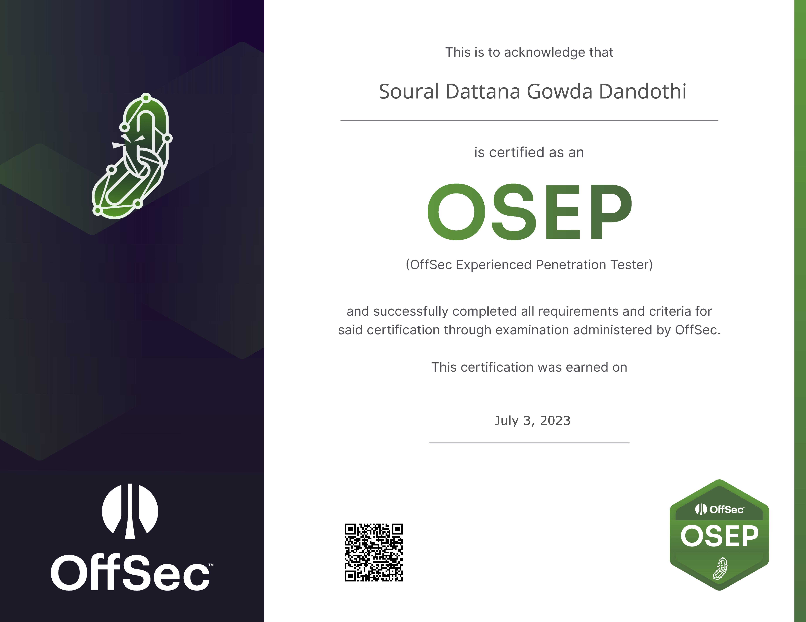

OSEP
My Journey to Passing OSEP
Introduction
Embarking on the Offensive Security Experienced Penetration Tester (OSEP) certification was one of the most challenging yet rewarding experiences of my professional career. This certification, provided by Offensive Security, is designed to train and certify individuals in advanced penetration testing techniques. Here, I will share my journey, the strategies I employed, the challenges I faced, and the triumphs I achieved.
Why I Chose OSEP
After completing the OSCP (Offensive Security Certified Professional), I was looking for the next step to deepen my expertise in penetration testing. OSEP stood out due to its focus on evading defenses and advanced attack techniques, which are crucial skills for a penetration tester. The allure of mastering these skills and the recognition that comes with OSEP certification motivated me to take on this challenge.
Preparation
Prerequisites
Before starting the OSEP course, I ensured I had a solid foundation in the following areas: - Advanced knowledge of networking and operating systems. - Proficiency in scripting languages, particularly Python and Bash. - Prior experience with penetration testing tools and methodologies. - Understanding of Active Directory and Windows internals.
Course Material
I began by thoroughly studying the course material provided by Offensive Security: - PEN-300 Courseware: This included comprehensive PDFs and a series of videos. I made it a point to read every word and watch every video, taking detailed notes along the way. - Lab Environment: The PEN-300 lab environment was crucial for hands-on practice. I dedicated a significant amount of time to practicing each lab exercise, ensuring I understood every concept and technique.
Study Plan
To manage my study efficiently, I devised a structured plan: 1. Daily Study Routine: I committed to 3-4 hours of study every day, with more intensive sessions on weekends. 2. Hands-On Practice: Theory is essential, but hands-on practice was my priority. I spent 70% of my study time in the lab environment. 3. Note-Taking: I maintained a detailed notebook with summaries of techniques, commands, and scripts. 4. Review and Revise: Regularly revisiting previous topics helped reinforce my learning and ensure I retained critical information.
Key Topics and Techniques
Initial Access
I focused on various initial access techniques, including: - Phishing and social engineering. - Exploiting web application vulnerabilities. - Custom payloads and obfuscation techniques.
Lateral Movement
Understanding lateral movement was crucial: - Abusing Windows protocols and services (SMB, WMI, RDP). - Exploiting misconfigurations in Active Directory. - Developing and using custom tools for stealthier lateral movement.
Evasion Techniques
Bypassing defenses required in-depth knowledge of: - AV and EDR evasion techniques. - Utilizing various obfuscation methods for scripts and binaries. - Creating and modifying custom malware.
Challenges Faced
The journey was not without its challenges: - Time Management: Balancing study with work and personal life was difficult. Sticking to a strict schedule was essential. - Complex Topics: Advanced topics like AV evasion and Active Directory exploitation were particularly challenging. I had to revisit these topics multiple times. - Mental Fatigue: The intensity of the study sometimes led to burnout. Taking short breaks and ensuring adequate rest helped me stay focused.
Exam Preparation
Final Review
In the weeks leading up to the exam, I focused on: - Revisiting all course material and lab exercises. - Practicing with retired machines from platforms like Hack The Box and TryHackMe. - Participating in Capture The Flag (CTF) competitions to refine my skills.
Exam Strategy
During the exam: - I maintained a calm and focused mindset. - Carefully documented every step to ensure I had a clear record of my actions. - Prioritized tasks based on their point value and my confidence in completing them.
Triumph and Certification
Finally, after hours of grueling work, I submitted my report and waited for the results. The moment I received the email confirming my success was incredibly fulfilling. All the hard work, late nights, and perseverance had paid off.
Conclusion
Passing the OSEP was a monumental achievement in my career. It not only validated my skills but also significantly enhanced my capabilities as a penetration tester. For anyone considering the OSEP certification, my advice is to stay dedicated, practice relentlessly, and never hesitate to revisit challenging topics. The journey may be tough, but the rewards are immense.
Acknowledgments
I extend my gratitude to Offensive Security for their comprehensive course and lab environment, and to the cybersecurity community for their endless resources and support. This journey has been one of growth and learning, and I look forward to applying these skills in real-world scenarios. You can verify my Credential HERE
